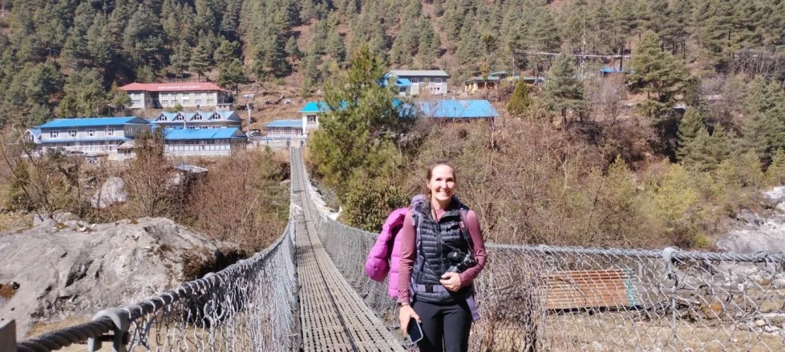
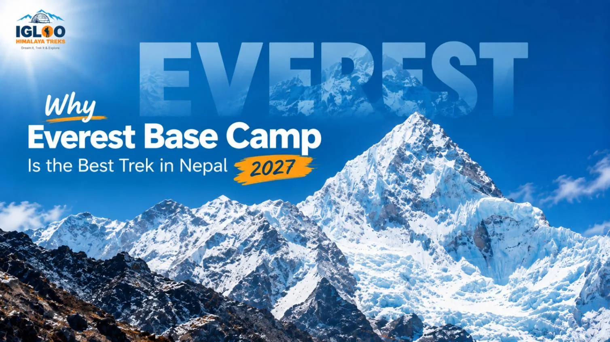
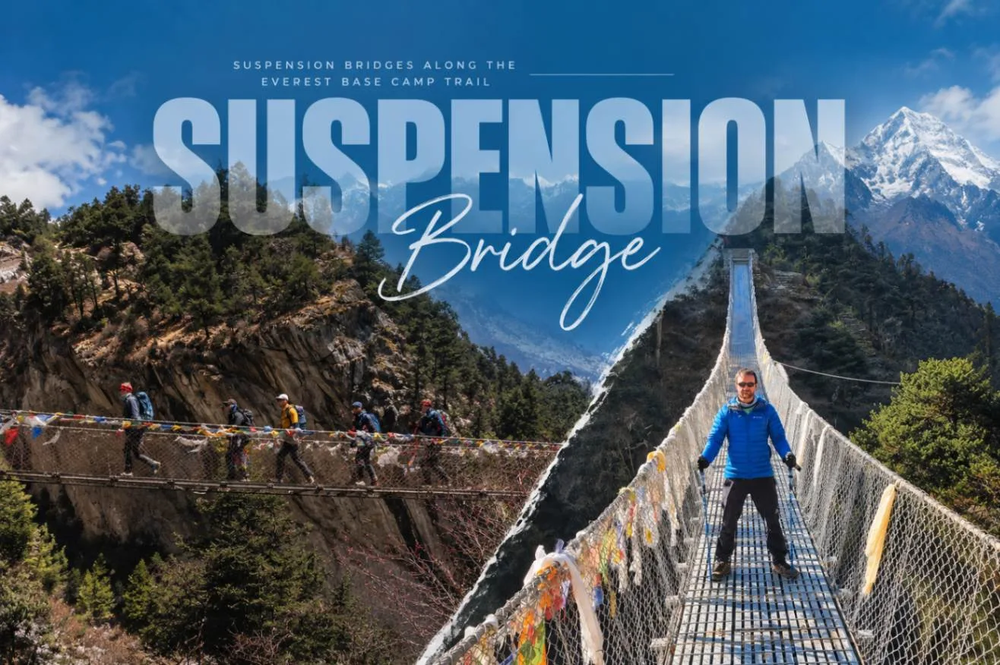
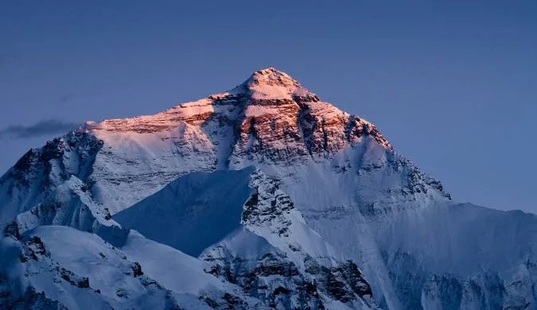
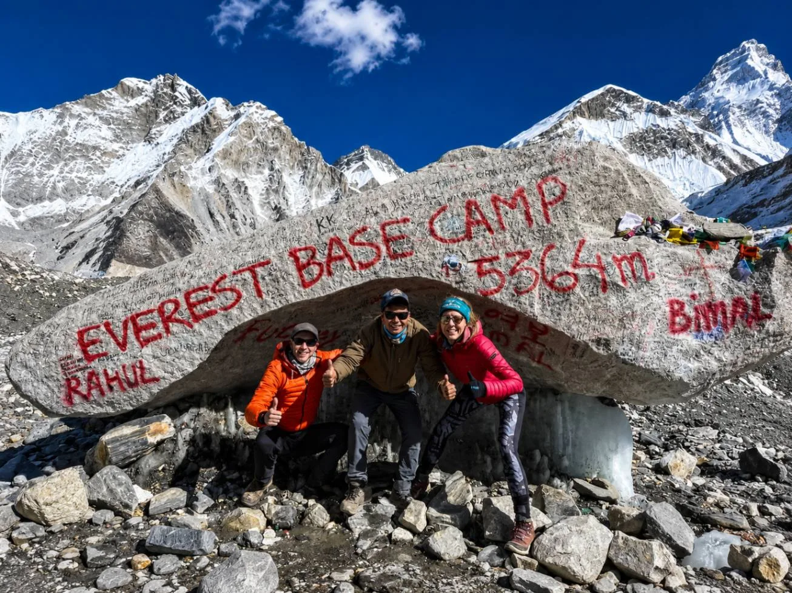
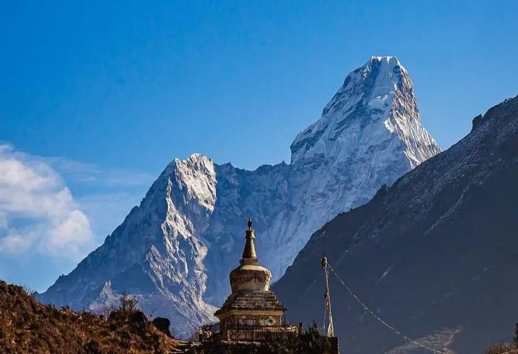

1. The Global Magnet: The Mythos of Chomolungma & Mount Everest (8,848.86m)
Mount Everest is not merely a mountain; it is the ultimate geographical extreme on planet Earth. Known natively as Sagarmatha in Nepal ("Goddess of the Sky") and Chomolungma in Tibet ("Mother Goddess of the World"), its summit stands at an astounding 8,848.86 meters (29,031.7 feet) above sea level. For over a century, this sheer wall of rock, ice, and stratospheric wind has captured the collective imagination of humankind.
While fewer than 800 elite mountaineers attempt the perilous technical climb to the summit each year, the trek to Everest Base Camp (5,364m / 17,598ft) allows everyday hikers, adventurers, and dreamers to stand directly at the threshold of this mythological giant. It offers ordinary mortals an authentic taste of high-altitude mountaineering history, without having to risk frostbite on the Death Zone.
"To the Sherpa community, Chomolungma is sacred—the divine residence of Miyolangsangma, the Tibetan Buddhist goddess of inexhaustible giving and prosperity. Entering the Khumbu valley is considered a spiritual pilgrimage, which is why expeditions perform sacred Puja ceremonies before ever setting foot on the upper ice." — Ang Tshering Sherpa, 5x Everest Summiter
2. The Thrill of the Gateway: The Legendary Flight into Lukla Airport

Few adventures in the world begin with such instant, heart-racing adrenaline as the journey to Everest. The doorway to the trail is Tenzing-Hillary Airport in Lukla (2,846m), consistently voted among the most dramatic mountain airstrips on the globe. Boarding a small twin-turboprop Dornier or Twin Otter aircraft in Kathmandu or Ramechhap, passengers bank through misty alpine valleys before touching down on an upward-sloping, 527-meter runway perched right over a sheer river gorge.
The moment the plane door opens at Lukla, you step out into crisp, sub-alpine mountain air scented with woodsmoke and pine resin. You are greeted by the jingling bronze bells of pack animals, bustling porter lodges, and the soaring granite peaks of Kwangde Ri. In an instant, the chaotic modern city is replaced by an authentic mountain expedition realm.
3. Living Sherpa Culture: Ancient Tibetan Buddhism, Monasteries & Mani Stones

Unlike sterile, uninhabited wilderness routes, the Everest Base Camp trail is a journey through a vibrant, centuries-old spiritual civilisation. The Khumbu is the ancestral homeland of the Sherpa people, who migrated from eastern Tibet over five centuries ago, bringing with them the profound traditions of Nyingma Tibetan Buddhism.
Every hour on the trail weaves you deeper into this spiritual landscape:
- Mani Walls & Chortens: Thousands of slate slabs carved with the sacred six-syllable mantra Om Mani Padme Hum line the path. Mountain etiquette dictates passing all stupas and mani walls on the left (clockwise).
- Tengboche Monastery (3,867m): The spiritual beating heart of the Khumbu. Perched atop a panoramic ridge framed directly by Everest and Ama Dablam, trekkers can sit silently inside the incense-filled prayer hall while robed lamas chant rhythmic afternoon prayers to the resonance of deep dungchen horns.
- Pangboche Gompa: Founded in the 16th century by Lama Sange Dorje, this is the oldest monastery in the valley, housing ancient relics and surrounded by sacred junipers planted by high lamas.
4. Namche Bazaar: The Amphitheater Trading Capital Suspended in the Clouds

Nestled at 3,440 meters (11,286 feet), Namche Bazaar is one of the most remarkable settlements in the entire Himalayan mountain arc. Sprawling across a dramatic horseshoe-shaped amphitheater, Namche has served as the historic regional trading crossroads between Tibetan salt traders and lowland farmers for centuries.
Today, it blends centuries of tradition with unbelievable modern comforts. During your mandatory two-day acclimatization stay, you can:
Alpine Comforts in the Clouds
- Savor artisanal cappuccino and warm apple strudel in wood-fired German bakeries.
- Visit the highest Irish pub on Earth for a pint of Guinness and live acoustic mountaineering songs.
- Browse gear shops selling genuine Gore-Tex, down booties, and trekking poles alongside traditional yak wool shawls.
Cultural & Acclimatization Highlights
- Explore the Sherpa Culture Museum and the Everest Photo Gallery above the village.
- Hike up to the legendary Hotel Everest View (3,880m) for your very first sweeping look at the Everest summit pyramid.
- Witness the lively Saturday morning Haat Bazaar where traders barter fresh goods carried from distant lower hills.
5. Engineering Feats: The 12 Dazzling Suspension Bridges of the Dudh Koshi

Between Lukla and Namche Bazaar, the trail negotiates the furious, turquoise-white rapids of the Dudh Koshi River ("Milk River"). Traversing this steep-sided canyon requires crossing a series of extraordinary, high-tensile steel suspension bridges that have become famous in their own right.
The most famous among them is the double-tiered Hillary Suspension Bridge, which spans a dizzying 130 meters (426 feet) above the riverbed. Walking out over the swaying steel mesh deck while glacier-fed winds whistle through thousands of prayer flags is an exhilarating rite of passage. Watching loaded yak caravans cross these narrow bridges with absolute poise is an unforgettable testament to mountain life.
6. The Colosseum of 8,000-Meter Giants: Unrivaled Mountain Panoramas

Nowhere else on Earth can a recreational trekker without technical climbing skills immerse themselves in such a dense concentration of towering mountains. The Everest Base Camp corridor passes beneath four of the planet's fourteen 8,000-meter peaks:
| Mountain Peak | Elevation (m / ft) | Global Rank | Best Trail Viewpoint |
|---|---|---|---|
| Mount Everest (Sagarmatha) | 8,848.86m / 29,031ft | 1st (Highest on Earth) | Kala Patthar, Hotel Everest View, Syangboche Ridge |
| Lhotse | 8,516m / 27,940ft | 4th Highest | Tengboche, Dingboche, Gorak Shep lateral moraine |
| Makalu | 8,485m / 27,838ft | 5th Highest | Nangkartshang Peak (Dingboche acclimatization hike) |
| Cho Oyu | 8,188m / 26,864ft | 6th Highest | Gokyo Ri, Renjo La Pass (circuit variations) |
| Ama Dablam | 6,812m / 22,349ft | "Matterhorn of the Himalayas" | Uninterrupted panoramic views all the way from Namche to Lobuche |
7. Kala Patthar (5,545m): The Real Summit Vista of Mount Everest
A common surprise for first-time trekkers is that you cannot see the summit of Mount Everest from Everest Base Camp itself. Because Base Camp is tucked deep beneath the towering western shoulder of Nuptse (7,861m) and the West Ridge, the actual crown of Everest is hidden behind massive rock battlements.
The true visual climax of the entire journey is ascending the dark shale peak of Kala Patthar ("Black Rock", 5,545m / 18,192ft), which rises directly above the sandy settlement of Gorak Shep.
"While most groups hike Kala Patthar at dawn, our Sherpa guides often recommend an afternoon sunset ascent. At sunrise, the sun rises behind Everest, silhouetting the mountain in stark glare. At sunset, the golden evening light paints the black rock pyramid and South Col in brilliant fiery amber, with the Khumbu Icefall glowing deep cobalt beneath." — Ang Tshering Sherpa
8. Standing Beside the Khumbu Icefall: The Frontline of Human Endeavor (5,364m)

Arriving at Everest Base Camp (5,364m) is an intensely emotional moment. After eight to nine days of relentless physical trekking over suspension bridges, rocky switchbacks, and high-altitude glacial moraines, you finally step onto the live rubble-covered surface of the Khumbu Glacier.
Reaching the iconic spray-painted boulder draped in colorful silk khatas and prayer flags is the culmination of months—often years—of personal dreaming and physical preparation. You stand right beside the terrifying seracs of the Khumbu Icefall, listening to the glacier groan, pop, and shift beneath your feet as melting meltwater streams carve turquoise tunnels through the ancient ice.
During the spring climbing season (April and May), Base Camp transforms into a bustling tent city of over a thousand mountaineers, Sherpas, and doctors from dozens of global expeditions, adding an electric energy to the glacial frontier.
9. Historic Mountaineering Legacy: Walking in the Footsteps of Giants
Every meter of the Everest Base Camp trail is steeped in world mountaineering lore. Unlike newly forged tourism routes, when you walk from Lukla to Gorak Shep, you are tracing the historic footsteps of legends:
- 1953 British Expedition: Sir Edmund Hillary and Tenzing Norgay trekked these very trails during their historic first ascent of Everest.
- Pioneering Alpine Feats: Reinhold Messner walked this valley before completing the first solo ascent of Everest without bottled oxygen in 1980.
- The Climbers' Memorial at Thokla Pass (4,830m): Just above Dingboche at the top of the steep Thokla ridge (Chukpo Lharu), the trail opens onto a solemn field of stone chortens commemorating climbers and Sherpas who lost their lives on Everest. Among them are touching memorials to Scott Fischer, Rob Hall, and legendary 10-time summitter Babu Chiri Sherpa. It is one of the most reverent, poignant places in the Himalayas.
10. World-Class Teahouse Infrastructure: Comfort at the Edge of the Atmosphere
One of the paramount reasons Everest Base Camp enjoys such immense popularity over remote trails like Kanchenjunga, Dhaulagiri, or Upper Dolpo is its unrivaled teahouse infrastructure. You do not need to sleep in frozen two-man tents, dig latrines in the snow, or rely on freeze-dried rations.
Every afternoon, your hike concludes at a welcoming stone teahouse lodge where you can enjoy:
- Private Twin Bedrooms: Clean mattresses, clean sheets, and thick blankets (supplemented by your -20°C sleeping bag).
- Expansive Menus: Everything from fuel-rich Nepalese Dal Bhat (with unlimited refills of rice, lentil soup, and vegetable curry) to Tibetan momos, pizza, yak steaks, and pancakes.
- Modern Amenities: Hot gas showers, solar device-charging stations, and high-speed satellite Wi-Fi access (via Everest Link cards) enabling you to video-call loved ones from 5,000 meters above sea level.
11. Trail Accessibility: Extreme Altitude Without Technical Mountaineering
Perhaps the greatest secret behind the popularity of Everest Base Camp is its democratic accessibility. To stand at 5,364 meters at the base of the world's highest peak, you do not need:
- Crampons, ice axes, or mountaineering boots.
- Ropes, harnesses, carabiners, or ascenders.
- Prior alpine climbing experience or glacier crevasse rescue training.
The entire EBC trail is a walkable trekking route composed of dirt tracks, stone staircases, suspension bridges, and rolling glacial moraines. While it is physically strenuous and cardiovascularly demanding due to atmospheric oxygen dropping to nearly 50% of sea-level density, it requires only two things: disciplined physical fitness and proper acclimatization. This makes it an achievable dream for retirees, gap-year students, working professionals, and adventurous families alike.
12. Route Versatility: From Luxury Heli-Treks to the Epic Three Passes
The Everest region offers incredible route flexibility. Depending on your time budget, physical fitness, and style preference, the classic Base Camp trek easily adapts into multiple variations:
Comfort & Time-Saver Options
- EBC with Helicopter Flyback (9–10 Days): Trek up gradually for safe acclimatization, reach Base Camp and Kala Patthar, then board a chartered helicopter from Gorak Shep directly back to Kathmandu in under 45 minutes.
- Everest View Luxury Trek (7 Days): Ideal for travelers who wish to experience Sherpa culture and view Everest from Syangboche (Hotel Everest View) without going above 3,880m.
Epic High-Pass Adventures
- Gokyo Lakes & Cho La Pass (16 Days): Adds the sacred turquoise glacial lakes of the Gokyo Valley and crosses the 5,420m Cho La Pass before joining the main EBC route.
- Everest Three Passes Trek (20 Days): The ultimate non-technical alpine circuit, crossing Kongma La (5,535m), Cho La (5,420m), and Renjo La (5,360m).
13. Global Trail Camaraderie: A United Nations of Mountain Enthusiasts

Trekking to Everest Base Camp is rarely a lonely experience. Each evening, as darkness settles over the frozen Khumbu valleys, the central dining hall of your teahouse becomes an international melting pot.
Surrounding the cast-iron stove, you will sit shoulder-to-shoulder with solo backpackers from Germany, corporate executives from Tokyo, doctors from Australia, teachers from Canada, and Nepali Sherpa guides. The shared vulnerability of high altitude—battling cold fingers, sipping garlic soup, laughing over card games, and celebrating each other's daily milestones—creates deep friendships that often endure for decades.
14. Safety & Rescue Network: The Safest High-Altitude Trekking Valley
Venturing above 5,000 meters carries inherent physiological risks, notably Acute Mountain Sickness (AMS), High Altitude Pulmonary Edema (HAPE), and High Altitude Cerebral Edema (HACE). However, the Khumbu Valley boasts the most sophisticated alpine medical and emergency rescue infrastructure in the developing world:
- Himalayan Rescue Association (HRA) Clinic at Pheriche (4,240m): Staffed during peak spring and autumn seasons by volunteer Western and Nepali emergency medicine physicians who specialize in high-altitude pathology. They conduct daily public seminars on altitude sickness prevention.
- Rapid Helicopter Evacuations: Multiple private helicopter operators (Simrik, Dynasty, Air Dynasty, Kailash) maintain search-and-rescue standby in the valley. In critical medical emergencies, a helicopter can arrive at any clear landing zone from Namche to Gorak Shep within 30 to 45 minutes in good visibility.
- Daily Oximeter Monitoring: Certified guides from Igloo Himalaya Treks conduct twice-daily blood oxygen saturation (SpO2) and pulse readings using medical-grade fingertip oximeters, spotting symptoms of hypoxia days before they become dangerous.
15. The Master Route & Elevation Architecture (Day-by-Day)

The standard classic 14-day Everest Base Camp itinerary is built around the medical rule of "climb high, sleep low", incorporating two mandatory multi-night acclimatization halts:
| Day | Segment & Route | Altitude (m / ft) | Distance & Time | Terrain & Acclimatization Focus |
|---|---|---|---|---|
| Day 01 | Flight to Lukla; trek to Phakding | 2,846m → 2,610m | 8 km · 3.5 hrs | Gentle descent along Dudh Koshi to initiate trekking rhythm |
| Day 02 | Phakding to Namche Bazaar | 2,610m → 3,440m | 11 km · 6 hrs | Cross Hillary Suspension Bridge; sustained pine forest climb |
| Day 03 | Namche Bazaar (Acclimatization Day) | 3,440m ↔ 3,880m | 5 km · 4 hrs | Active hike to Hotel Everest View; Khumjung Hillary School |
| Day 04 | Namche Bazaar to Tengboche | 3,440m → 3,867m | 10 km · 5 hrs | Valley descent to Phunki Thenga, then switchback climb to monastery |
| Day 05 | Tengboche to Dingboche | 3,867m → 4,410m | 11 km · 5.5 hrs | Pass Pangboche gompa; enter stone-walled high alpine pastures |
| Day 06 | Dingboche (Acclimatization Day) | 4,410m ↔ 5,100m | 4 km · 4 hrs | Summit Nangkartshang Peak ridge for panoramic Makalu vistas |
| Day 07 | Dingboche to Lobuche | 4,410m → 4,940m | 9 km · 5 hrs | Thokla Pass climber memorials; skirting Khumbu lateral moraine |
| Day 08 | Lobuche → Gorak Shep → EBC! | 4,940m → 5,164m → 5,364m | 13 km · 8 hrs | Glacial moraine trek; reach Everest Base Camp; return to Gorak Shep |
| Day 09 | Kala Patthar summit → Pheriche | 5,545m → 4,240m | 14 km · 7 hrs | Dawn ascent for iconic Everest summit sunrise; descend to oxygen-rich valley |
| Day 10 | Pheriche to Namche Bazaar | 4,240m → 3,440m | 15 km · 6 hrs | Rapid descent through Tengboche forest; celebratory shower in Namche |
| Day 11 | Namche Bazaar to Lukla | 3,440m → 2,846m | 19 km · 7 hrs | Final trail day along Dudh Koshi; celebratory dinner with porters |
| Day 12 | Morning flight Lukla to Kathmandu | 2,846m → 1,400m | 45 min flight | Return to capital city; hotel rest and souvenir shopping |
16. Real Budgeting, Costs & Daily Spending Breakdown (2026–2027)
Understanding realistic financial requirements ensures smooth sailing throughout your Khumbu expedition. For 2026–2027, total costs break down into mandatory administrative permits, transport, and daily on-trail expenses:
Fixed Pre-Trek Fees & Logistics
- Sagarmatha National Park Permit: NPR 3,000 + 13% VAT (~$26 USD) per person.
- Khumbu Pasang Lhamu Municipality Permit: NPR 3,000 (~$23 USD) per person.
- Return Flights (Kathmandu/Ramechhap ↔ Lukla): ~$380 to $440 USD per person including luggage allowance.
- Licensed Guide & Porter Fees: Licensed guide ~$30–$40/day; porter ~$22–$28/day (carries up to 20kg).
On-Trail Daily Living Budget
- Teahouse Accommodation: $5 – $12 USD per night for standard twin rooms.
- Food & Beverages: $35 – $50 USD daily (prices increase from $6 for Dal Bhat in Phakding to $12 in Gorak Shep).
- Hot Gas Showers: $3 – $7 USD per shower.
- Device Charging & Internet: $3 – $5 USD per power bank charge; $20 USD for Everest Link 10GB card.
- Emergency Cash Buffer: Carry at least NPR 40,000 to 50,000 in cash from Kathmandu, as no reliable ATMs exist beyond Namche.
Frequently Asked Questions (FAQ) About Why Everest Base Camp Is Popular
Select a category below to explore expert answers to the most common questions travelers ask about Why Everest Base Camp Is Popular:
General & Planning

Ready to Experience the Himalayas?
Whether you are preparing for high-altitude trekking, cultural circuits, or alpine summit expeditions, start planning a bespoke journey tailored to your fitness, travel season, and style.